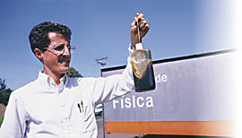

Currículo de André Koch Torres Assis.

Nascimento: 11 de agosto de 1962, Juiz de Fora, MG, Brasil.
Formação educacional:
- Bacharel em física (UNICAMP, 1980-83).
- Doutor em física (UNICAMP, 1984-87). Tese defendida e aprovada em 12/87: Relações de dispersão num plasma limitado, morno e magnetizado. Orientador de doutorado: Dr. P. H. Sakanaka.
Pós-doutorados:
- Universidade de Augsburg, Augsburg, Alemanha. De setembro a dezembro de 2023. Bolsa Pesquisa Humboldt concedida pela Fundação Alexander von Humboldt, da Alemanha. Projeto: "Principais Obras sobre Eletrodinâmica de Wilhelm Weber Traduzidas para o Inglês."
- Universidade Técnica de Dresden, Dresden, Alemanha. De Abril de 2014 até Junho de 2014. Bolsa Pesquisa Humboldt concedida pela Fundação Alexander von Humboldt, da Alemanha. Projeto: "Explorando a Massa Inercial Efetiva das Partículas."
- Universidade de Hamburgo, Hamburgo, Alemanha. De fevereiro de 2009 a maio de 2009. Bolsa Pesquisa Humboldt concedida pela Fundação Alexander von Humboldt, da Alemanha. Projeto: "O Modelo Planetário de Weber para o Átomo."
- Universidade de Hamburgo, Hamburgo, Alemanha. De agosto de 2001 a novembro de 2002. Bolsa Pesquisa Humboldt concedida pela Fundação Alexander von Humboldt, da Alemanha. Projeto: "Lei de Weber Aplicada ao Eletromagnetismo e à Gravitação."
- Visiting Scholar no Center for Electromagnetics Research, Northeastern University, Boston, EUA. De outubro de 1991 a setembro de 1992. Bolsa concedida pela FAPESP.
- Culham Laboratory, United Kingdom Atomic Energy Authority, Oxfordshire, Inglaterra. De fevereiro de 1988 a janeiro de 1989. Bolsa concedida pelo CNPq.
Emprego: de maio de 1989 até o presente professor no Departamento de Raios Cósmicos e Cronologia, Instituto de Física da Universidade Estadual de Campinas - UNICAMP, Brasil. Endereço permanente: Instituto de Física, UNICAMP, Rua Sérgio Buarque de Holanda 777, 13083-859 Campinas - SP, Brasil.
E-mail: assis@ifi.unicamp.br
Homepage: https://www.ifi.unicamp.br/~assis
Telefone: (+55) (19) 35215515
Lista dos livors, a maioria disponível em formato PDF: https://www.ifi.unicamp.br/~assis/livros.htm.
Lista de artigos publicados, em formato pdf: https://www.ifi.unicamp.br/~assis/papers.htm.
Principais interesses de pesquisa:
- Mecânica Relacional, princípio de Mach e a origem da inércia, absorção da gravidade.
- Eletrodinâmica de Weber, força de Ampère entre elementos de corrente, cálculo de indutância, campo elétrico fora de condutores resistivos com corrente constante, propagação de sinais eletromagnéticos.
- Cosmologia, lei de Hubble, radiação cósmica de fundo, teoria da luz cansada, universo infinito no espaço e no tempo.
- História e filosofia da ciência, experiências de física com materiais de baixo custo.
Países onde já ministrou palestras: Índia, Espanha, Portugal, Inglaterra, EUA, França, Argentina, Colômbia, Itália, Grécia, Chile, Polônia, República Tcheca, Canadá, Alemanha, Rússia.
Cursos ministrados a nível de graduação e de pós-graduação:
- Física Básica (Halliday e Resnick, Sears, Tipler).
- Métodos Matemáticos da Física (Arfken, Butkov).
- Mecânica Clássica (Symon, Feynman, Goldstein).
- Eletromagnetismo Clássico (Reitz/Milford/Christy, Griffiths, Jackson).
- Cosmologia (Hubble, Sciama).
- Mecânica Relacional e Princípio de Mach (Mach, Barbour, Assis).
- Eletrodinâmica de Weber e força de Ampère entre elementos de corrente (Weber, Maxwell, Graneau, Assis).
Cursos de Eletrodinâmica de Weber, Mecânica Relacional e Princípio de Mach, Cosmologia e História da Ciência ministrados a nível de graduação e de pós-graduação em:
- No exterior: Universidad Nacional del Comahue (Neuquen, Argentina), Universidad de Tarapaca (Arica, Chile); Universidade de Augsburg (Augsburg, Alemanha, de outubro a dezembro de 2023).
- No Brasil: Universidade Estadual de Campinas (UNICAMP, Campinas), Univesidade de São Paulo (USP, São Paulo), Instituto Nacional de Pesquisas Espaciais (INPE, São José dos Campos), Universidade Federal de Juiz de Fora (UFJF, Juiz de Fora), Escola Técnica de Eletrônica Francisco Moreira da Costa (ETE, Santa Rita do Sapucaí), Universidade Federal da Bahia (UFBA, Salvador), Universidade Estadual de Maringá (UEM, Maringá), Universidade de Brasília (UnB, Brasília).
Estudantes de iniciação científica, mestrado, doutorado e colaboradores de pós-doutorado:
- Pessoas que vieram realizar seu pós-doutorado trabalhando conosco: João Paulo M. d. C. Chaib (Eletrodinâmica de Ampère, de junho de 2009 a maio de 2010), Antônio Jamil Mania (Cargas superficiais em circuitos elétricos com corrente e as forças longitudinais, de março de 1997 a fevereiro de 1998), Marcelo de A. Bueno (Explosões de fios e forças longitudinais em circuitos elétricos, de agosto de 1995 a janeiro de 1996).
- Estudantes de doutorado: Sergio Luiz Bragatto Boss (Tese em formato pdf com 35 Mb: Tradução Comentada de Artigos de Stephen Gray (1666-1736) e Reprodução de Experimentos Históricos com Materiais Acessíveis - subsídios para o ensino de eletricidade, tese aprovada em dezembro de 2011 junto à Faculdade de Ciências da Unesp de Bauru, com co-orientação do Prof. J. J. Caluzi); João Paulo Martins de Castro Chaib (Tese em formato pdf com 10 Mb: Análise do Significado e da Evolução do Conceito de Força de Ampère, juntamente com a Tradução Comentada de sua Principal Obra sobre Eletrodinâmica; tese aprovada em janeiro de 2009); Júlio Akashi Hernandes (Potenciais e campos elétricos dentro e fora de condutores resistivos com correntes constantes, tese aprovada em fevereiro de 2005); João J. Caluzi (A energia potencial de Schrödinger e a eletrodinâmica de Weber, tese aprovada em outubro de 1995); Marcelo de A. Bueno (Cálculo de Força e de Indutância em Circuitos Elétricos, tese aprovada em agosto de 1995).
- Estudantes de mestrado: Daniel dos Anjos Silva, dissertação em formato pdf com 1 Mb: Controvérsia entre Ação a Distância e Ação por Contato: Abordagem Histórica com Implicações no Ensino, dissertação aprovada em junho de 2019; Emely Giron dos Santos, dissertação em formato pdf com 3 Mb: Uma Abordagem Histórica e Experimental sobre Eletricidade no Ensino Fundamental e Médio, dissertação aprovada em 18/05/2018 junto ao Departamento de Física do Instituto de Ciências Exatas da Universidade Federal de Juiz de Fora - UFJF; Ciro Lino Bellan, dissertação em formato pdf com 5 Mb: Kits Didáticos para o Ensino de Circuitos Elétricos feitos com Materiais de Fácil Acesso e de Baixo Custo, orientador: Júlio Akashi Hernandes, co-orientador: A. K. T. Assis, dissertação aprovada em 13/02/2017 junto ao Departamento de Física do Instituto de Ciências Exatas da Universidade Federal de Juiz de Fora - UFJF; Ceno Pietro Magnaghi, dissertação em formato pdf com 2 Mb: Análise e Tradução Comentada da Obra de Arquimedes Intitulada “Método sobre os Teoremas Mecânicos”, dissertação aprovada em abril de 2011; Júlio Akashi Hernandes, Cargas superficiais e propagação de sinais em condutores, dissertação aprovada em fevereiro de 2001; Dario S. Thober, dissertação em formato pdf: Lei de Weber e indução de correntes, dissertação aprovada em setembro de 1993; João J. Caluzi, dissertação em formato pdf: O movimento de cargas em capacitores e a velocidade limite de acordo com a lei de Weber, dissertação aprovada em agosto de 1991.
- Estudantes de iniciação científica e das disciplinas de instrumentação para ensino: Alexandre Gomes Pinto (Interações entre cargas com a eletrodinâmica de Weber, 1/1/2012 a 31/12/2012; A frenagem eletromagnética de um ímã caindo em um tubo condutor, segundo semestre de 2012), Valter Aparecido Silva Júnior (Fabricação e aplicação de eletretos, segundo semestre de 2010; História e propriedades dos eletretos, segundo semestre de 2010); Vicente Lima Ventura Seco (Estudos sobre “O Método” de Arquimedes através da Construção de Balanças e Alavancas, primeiro semestre de 2010); Fabio Miguel de Matos Ravanelli (Experiências de Ampère com materiais de baixo custo, agosto de 2007 a julho de 2008; Redação de um texto sobre as experiências de Ampère com materiais de baixo custo, agosto de 2008 a julho de 2009); Cesar José Calderon Filho (Estudo teórico e experimental sobre o atrito, agosto de 2007 a julho de 2008); Gilberto Pessato Junior (Experimento do plano inclinado de Galileu, primeiro semestre de 2008); Ana Elitha dos Santos Amaral (O eletróforo de Volta, primeiro semestre de 2008); Nivaldo Benedito Ferreira Campos (Tradução comentada da obra "Sobre os corpos flutuantes - Livro II" de Arquimedes, segundo semestre de 2007); Erica Formighieri (Experiências sobre atrito, primeiro semestre de 2007); Juliano Camillo (Geradores eletrostáticos: esfera de enxofre de Otto von Guericke e chuva elétrica de Kelvin, segundo semestre de 2006); Ceno Pietro Magnaghi (Origem da corrente elétrica - A invenção da pilha, segundo semestre de 2006); Douglas Soares da Silva (Princípio de Arquimedes - Uma demonstração qualitativa e quantitativa, primeiro semestre de 2006); Geraldo Magela Severino Vasconcelos (Experimentos de eletrostática de baixo custo para o ensino médio, segundo semestre de 2005); Ivan Mingireanov Filho (Aperfeiçoamento e Digitalização das Experiências do Banco de Rotações, primeiro semestre de 2005, vídeo Newton e o Movimento Circular); Alexandre Rodrigues (Experiências utilizando o banco de rotações, primeiro semestre de 2005); Luís Gustavo Vitti (Banco de rotações, 2004); Wilson Bagni Junior (Teoria das cargas imagem - Tradução de um texto de James Clerk Maxwell, segundo semestre de 2003); Luciano Romenius Ferreira Guimarães ("Exceção à regra do fluxo" - Uma tradução comentada do trabalho de Michael Faraday sobre indução unipolar, primeiro semestre de 2003); Alexander Montero Cunha (Sobre a ação à distância - Tradução de um texto de James Clerk Maxwell, primeiro semestre de 2003); João E. Lamesa; Hugo B. de Carvalho (a indução unipolar, setembro de 1999 a julho de 2000); Daniel Gardelli (Cargas superficiais e campos elétricos em circuitos com corrente contínua, setembro de 1995 a fevereiro de 1996); Júlio A. Hernandes; Fábio M. Peixoto (Eletrodinâmica de Weber e os dipolos elétricos, março de 1990 a outubro de 1992); Dario S. Thober (Lei de Weber e suas aplicações ao eletromagnetismo e gravitação, outubro de 1989 a fevereiro de 1992); Marcelo de A. Bueno (Lei de Weber e suas aplicações ao eletromagnetismo, fevereiro de 1990 a julho de 1991).
Currículo Lattes do CNPq: http://lattes.cnpq.br/8539007072922745.
Volta para a homepage inicial de Andre K. T. Assis.